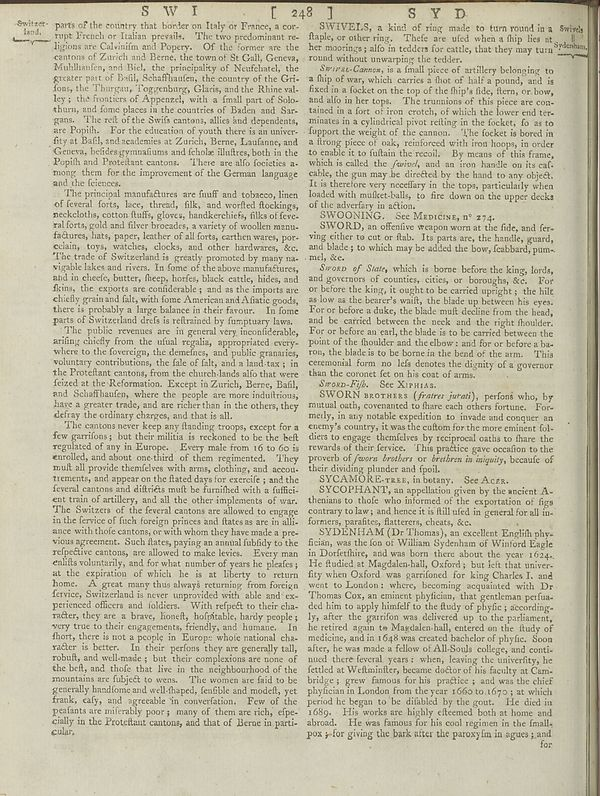

Scan ID britannica:309f765b1ecc83e0a7f7762e44b4a927a7555443:train:251
Image SHA-256 69952e7c4a0f40267d357d04308f674155b3ab206ce8f2f4887124ce481f8c1d
Status: ok. Running header: SWI [ 248] SYD (catchword). Removed page furniture: Page-header: SWI [ 248] SYD.
PDF · raw Parse reply · LaTeX
Entries: E0007 SWIVELS SWOONING SWORD SYCOPHANT

| # | Class | Box | Parse 3.5 | Used text | Source |
|---|---|---|---|---|---|
| 1 | Section-header | [0.0166, 0.0219, 0.082, 0.0563] | Switect- land. | Switzerland. | super_vl |
| 2 | Text | [0.084, 0.0164, 0.502, 0.2367] | parts of the country that border on Italy or France, a cor- tune French in Italian prevails. The two predominant se regions are Calvinia and Sprayer. Of the former we are the centons of Zurich and Berne, the town of St Galli, Geneva, Malhland’s and Mali, the principality of Nuofstadt, the gener part of Buli, Schaffaudins, the country of the Gris foas, the Thurgun, Toggenburg, Glaris, and the Rhine valley. I the Services of Appeares with a small part of Sabo shum, and lines places at the countries of Canada and Dur- gans. The refl of the Swifs cantons, allies and dependents are People for the d | parts of the country that border on Italy or France, a corrupt French or Italian prevails. The two predominant religions are Calvinism and Popery. Of the former are the cantons of Zurich and Berne, the town of St Gall, Geneva, Mühlhausen, and Biel, the principality of Neufchatel, the greater part of Bail, Schaffhausen, the country of the Grisons, the Thurgau, Toggenburg, Glaris, and the Rhine valley; the frontiers of Appenzell, with a small part of Solothurn, and some places in the countries of Baden and Sargans. The rest of the Swiss cantons, allies and dependents, are Popish. For the educati | super_vl |
| 3 | Text | [0.083, 0.2359, 0.5029, 0.4094] | The principal manufactures are fluff and toboyen, lines of several forks, here, threads, folk, and worried fleidings, neckoloths cotton fluffy, gloves, handkerchiefs, flisks of fever- alters, cold and five brecords, a variety of woollen manu- factures, lats, paper, leather of alflor, earthous wers, por- edain, toys, watches, clocks, and other hardwares, &c. The trade of Switzerland is greatly promoted by many na- vigable lakes and rivers. In form of the above manufacture, and in dieels, butter, fleep, horfes, black cattle, hides, and flans, the experts are considerable and as the imports of th | The principal manufactures are snuff and tobacco, linen of several sorts, lace, thread, silk, and worsted flockings, neckcloths, cotton stuffs, gloves, handkerchiefs, silks of several sorts, gold and silver brocades, a variety of woollen manu- factures, hats, paper, leather of all sorts, earthen wares, por- celain, toys, watches, clocks, and other hardwares, &c. The trade of Switzerland is greatly promoted by many na- vigable lakes and rivers. In some of the above manufactures, and in cheese, butter, sheep, horses, black cattle, hides, and flax, the exports are considerable; and as the imports | super_vl |
| 4 | Text | [0.085, 0.4102, 0.501, 0.5281] | The public revenues are in general very incredible, arising chiefly from the usual regular, appropriated every where to the foreignee, the domestic, and they gradually, voluntary contributions, the fate of falls, and a land tax; in the Protected cantons, from the church lands alto that were fored at the Reforation. Except in Zuricha, Bern, Bull, and Schaffaudines, where the people are more industrations, have a greater trade and are richer than in the others, shall use it was. | The public revenues are in general very inconsiderable, arising chiefly from the usual regalia, appropriated every- where to the foreigne, the demesnes, and public granaries, voluntary contributions, the sale of salt, and a land-tax; in the Protestant cantons, from the church-lands also that were feized at the Reformation. Except in Zurich, Berne, Basel, and Schaffhausen, where the people are more industrious, have a greater trade, and are richer than in the others, they defray the ordinary charges, and that is all. | super_vl |
| 5 | Text | [0.0869, 0.5273, 0.5, 0.9273] | The cantons never keep any binding croops, except for a few garrimsy but their militits is reckoned to be the belt regulations of any in Europe. Every male from 16 to 05 i enrolled, and about one third of them regimented. They mult all provide therefore with arms, clothing, and word traumatic, and appear on the dateted day for exercise, and the feronal cantons and dirithate mult he furished with a futitic ent train of artilities, and all its other implementos of war. The Switect of the fereral cantons are allowed to engage in the ferice of fuch foreign princes and flatters are in ali- ance wit | The cantons never keep any standing troops, except for a few garrisons; but their militia is reckoned to be the best regulated of any in Europe. Every male from 16 to 60 is enrolled, and about one-third of them regimented. They must all provide themselves with arms, clothing, and accoutrements, and appear on the stated days for exercise; and the several cantons and districts must be furnished with a sufficient train of artillery, and all the other implements of war. The Swissers of the several cantons are allowed to engage in the service of such foreign princes and states as are in alliance wi | super_vl |
| 6 | Text | [0.5078, 0.025, 0.9658, 0.0813] | SWIVELS, a kind of ring made to turn round in a fluids, or other ring. Theirs are ufed when a ship lies st he monitoring sals in teleckes for adults, that they may turn round without overwarping the tedder. | SWIVELS, a kind of ring made to turn round in a staple, or other ring. These are used when a ship lies at her moorings; also in tethers for cattle, that they may turn round without unwarping the tether. | super_vl |
| 7 | Text | [0.5088, 0.0805, 0.9258, 0.2781] | _Switet-Canonas_, is a fault piece of artillery belonging to a filing of way which carries a flux of half a pound, and is fixed in a locked on the top of the ship's ride, then, or how, and also in her tops. The renumion of this piece are con- tained in a fara of iron roots, of which the lowest tre- minutes in a cylindrical pivot rolling in the locket, fo as to fupport the weight of the canon." the footer is born in the living place of sky, resulting with from hoops in order to cable it to fulltain the recoil. By means of this frame, which called the _hybrid_, and as iron heads on its caf- sibl | Swivel-Cannon, is a small piece of artillery belonging to a ship of war, which carries a shot of half a pound, and is fixed in a socket on the top of the ship's side, stern, or bow, and also in her tops. The trunnions of this piece are con- tained in a fort of iron croutch, of which the lower end ter- minates in a cylindrical pivot resting in the socket, so as to support the weight of the cannon. The socket is bored in a strong piece of oak, reinforced with iron hoops, in order to enable it to sustain the recoil. By means of this frame, which is called the swivel, and an iron handle on its cas | super_vl |
| 8 | Text | [0.5098, 0.2773, 0.9248, 0.2789] | SWOONING. See Manchiss, n° 273. | SWOONING. See Manchiss, n° 273. | parse_fallback · box_too_small |
| 9 | Text | [0.5107, 0.2797, 0.9268, 0.3305] | SWORD), an effective weapon won at the file, and fer- ating either to eat or fish. Is parts are: the handle, geard, and blade; to which may be added the bow, feabbard pum- mal, | SWORD, an offensive weapon worn at the side, and serving either to cut or stab. Its parts are, the handle, guard, and blade; to which may be added the bow, scabbard, pummel, &c. | super_vl |
| 10 | Text | [0.5117, 0.3297, 0.9238, 0.4773] | _Sraod of State,_ which is borne before the king, lords, and governors of counties, cities or boroughs, &c. For be before the King, if weights to be carried upright; the bill as so we as the batter's wait, the blade up between the you. For or before a dake, the blade muit decline from the head, and be carried between the neck and the right shoulder. For or before an sail, the blade is to the carrier between the pouts of the shoulder and the elbow, and for or before a ba- ros, the blade is to be borne in the head of the arm. This determined, from no Heil denotes the digerity of a governor than | Sword of State, which is borne before the king, lords, and governors of counties, cities, or boroughs, &c. For or before the king, it ought to be carried upright; the hilt as low as the bearer's waist, the blade up between his eyes. For or before a duke, the blade must decline from the head, and be carried between the neck and the right shoulder. For or before an earl, the blade is to be carried between the point of the shoulder and the elbow: and for or before a ba- ron, the blade is to be borne in the bend of the arm. This ceremonial form no less denotes the dignity of a governor than the co | super_vl |
| 11 | Text | [0.5137, 0.4781, 0.9229, 0.4898] | _Source: Filk._ Sec XAnsis | than the coronet set on his coat of arms. Sword-Fish. See Xiphias. SWORN, promissory (forensic). | super_vl · expanded_beyond_parse |
| 12 | Text | [0.5146, 0.4906, 0.9219, 0.5961] | SWORN BORSHAS ((after juradi), perfonió, by manual oath, overward to flare each others fortune. For- metly, in any notable question in invade and concuer en summits country, it was the culton for the more eminent ful diers to engage themselves by reciprocal oaths to fame the revards of their device. This practice gave cocotion to the growth of _Jones brothers to freedom in majority,_ because of their dividing plunder and fpalt. | SWORN BROTHERS (frateres jurati), persons who, by mutual oath, covenanted to share each others fortune. Formerly, in any notable expedition to invade and conquer an enemy's country, it was the custom for the more eminent soldiers to engage themselves by reciprocal oaths to share the rewards of their service. This practice gave occasion to the proverb of sworn brothers or brethren in iniquity, because of their dividing plunder and spoil. | super_vl |
| 13 | Text | [0.5156, 0.5969, 0.9209, 0.6094] | SYCOMORFrans, has发言. See Acces. | SYCAMORE-tree, in botany. See Acer. SYCOPHANT, an appellation given by the ancient A | super_vl · expanded_beyond_parse |
| 14 | Text | [0.5166, 0.6102, 0.9238, 0.6633] | SYCOPHANT, an appellation given by the ancient A- theman to thole who informed the exporation of figs contary to bay, and hence it is full field in general for all inforners, parafities, flattreets, chests, &c. | SYCOPHANT, an appellation given by the ancient A- thenians to those who informed of the exportation of figs contrary to law; and hence it is still used in general for all in- formers, parasites, flatterers, cheats, &c. | super_vl |
| 15 | Text | [0.5176, 0.6641, 0.9199, 0.932] | SYDINHAM (Dr.) Thomas), an excellent English phys- fusion, was the fan of William Sychham of Wanilor Eagle in Dorforth, and was born there about the year 1934. He funded at Magdalach-ball, Oxford, but left the univi- rly when Oxford was performed for King Charles J. and went to London; where, becoming acquainted with Dr Thomas Cox, an entirely physician, and perhaps perfua- eded him to apply himself for the duty of physics, according- ly, after the garrifon was delivered up to the parliament, he rented again in Magdalan ball, entered on the body of medicine, and in 16% was created backache of | SYDENHAM (Dr. Thomas), an excellent English physician, was the son of William Sydenham of Winford Eagle in Dorsetshire, and was born there about the year 1624. He studied at Magdalen-hall, Oxford; but left that university when Oxford was garrisoned for king Charles I. and went to London: where, becoming acquainted with Dr Thomas Cox, an eminent physician, that gentleman persuaded him to apply himself to the study of physic; accordingly, after the garrison was delivered up to the parliament, he retired again to Magdalen-hall, entered on the study of medicine, and in 1648 was created bachelor of | super_vl |
Britannica scans: National Library of Scotland, CC0 1.0. Wikipedia text: Wikipedia contributors, CC BY-SA 4.0, revision links on each page. Generated 2026-10-18T13:26:14+00:00.